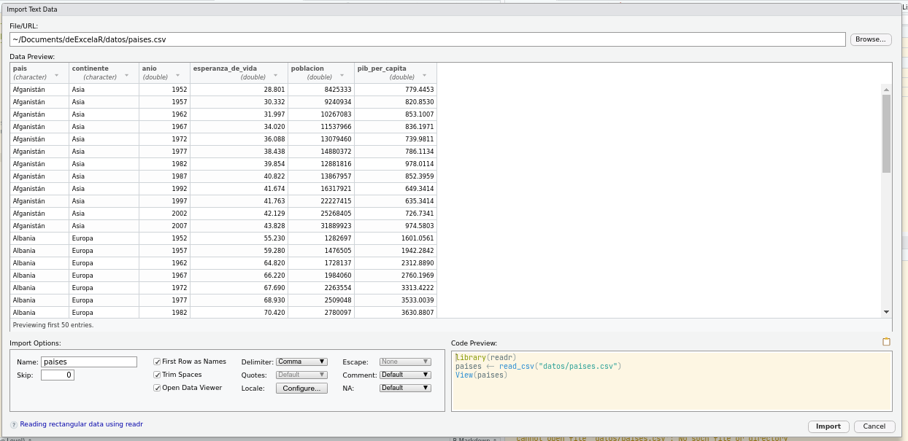
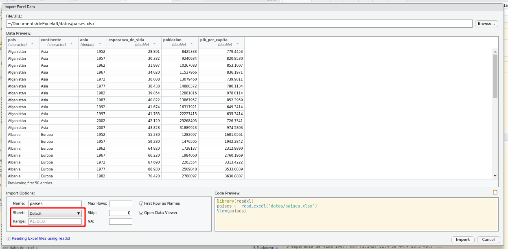

Existen muchas funciones distintas para leer datos dependiendo del formato en el que están guardados. Para datos tabulares, la forma más útil es el formato csv, que es un archivo de texto plano con datos separados por coma.
Obviamene para importar datos hace falta escrbir el códgo correspondiente pero para empezar, podés usar una ayuda de RStudio:
File → Import Dataset → From Text (readr)…
Esto nos va abrir una ventana donde podemos elegir el archivo que queremos importar (ya está elegido en la siguiente imagen) y otros detalles.
 En la pantalla principal van a tener una previsualización de los datos para guiarte. Abajo a la izquierda tenés varias opciones, como el nombre que vas a usar para la variable (paises), si la primera fila tiene la columna (sí), qué deliimtador tienen los datos (coma), etc…
Abajo a la derecha es lo importante, que es el código que vas a usar para efectivamente importar los datos. Vas a copiar ese código, cerrar esa ventana con el botón “Cancel”, y pegar el código en un chunk. Cuando lo ejecutes, vas tener una variable llamada “paises” con los datos.
library(readr)
paises <- read_csv("datos/paises.csv")## Parsed with column specification:
## cols(
## pais = col_character(),
## continente = col_character(),
## anio = col_double(),
## esperanza_de_vida = col_double(),
## poblacion = col_double(),
## pib_per_capita = col_double()
## )Nota: Notar que en este caso el código para leer los datos consta de dos líneas. La primera carga el paquete readr y el segundo usa la función read_csv() (del paquete readr) para leer el archivo .csv.
Nota: La interfaz de usuario de RStudio sirve para autogenerar el código que lee el archivo. Una vez que lo tenés, no necesitás abrirla de nuevo.
Todo ese texto naranja/rojo es intimidante pero no te preocupes, es sólo un mensaje que nos informa que los datos se leyeron y qué tipo de dato tiene cada columna. Podemos explorar la estructura de la variable paises usando la función str (de “structure”).
str(paises)## tibble [1,704 × 6] (S3: spec_tbl_df/tbl_df/tbl/data.frame)
## $ pais : chr [1:1704] "Afganistán" "Afganistán" "Afganistán" "Afganistán" ...
## $ continente : chr [1:1704] "Asia" "Asia" "Asia" "Asia" ...
## $ anio : num [1:1704] 1952 1957 1962 1967 1972 ...
## $ esperanza_de_vida: num [1:1704] 28.8 30.3 32 34 36.1 ...
## $ poblacion : num [1:1704] 8425333 9240934 10267083 11537966 13079460 ...
## $ pib_per_capita : num [1:1704] 779 821 853 836 740 ...
## - attr(*, "spec")=
## .. cols(
## .. pais = col_character(),
## .. continente = col_character(),
## .. anio = col_double(),
## .. esperanza_de_vida = col_double(),
## .. poblacion = col_double(),
## .. pib_per_capita = col_double()
## .. )Esto nos dice un montón. La primera línea dice que es una tibble, que es un caso especial de la estructura de datos tabular básica de R llamada data.frame. Tiene 1704 filas y 6 columnas. Las siguienes líneas nos dicen los nombres de las columnas (“pais”, “continente”, “anio”, “esperanza_de_vida”, “poblacion” y “pbi_per_capita”), su tipo de dato (chr o num), la longitud ([1:1704]) y sus primeros elementos. Cada columna de la tabla paises es un vector. Dado que los vectores son como los “ladrillos” que hacen a los data.frames, merecen una atención especial.
Un vector en R es esencialmente una lista ordenada de cosas, con la condición especial de que todos los elementos en un vector tienen que ser del mismo tipo de datos básico.
R tiene 5 tipos de datos básicos: double (doble), integer (entero), complex (complejo), logical (lógico) y character (caracter). Existen otros pero son formas un poco más sofisticadas de estos tipos básicos. Por ejemplo, el formato POSIXct (de tiempo) se guarda como doble, representando la cantidad de segundos pasados desde el 01/01/1970.
Una forma conveniente de crear un vector es con la función c() (de combinar)
x <- c(1, 2, 3, 4)
x## [1] 1 2 3 4x es una serie con 4 elementos. Si usamos la función str():
str(x)## num [1:4] 1 2 3 4Esta salida nos está informando que x es de tipo numérico (un nombre para dobles y enteros). Los vectores sólo pueden ser de un tipo. Por lo tanto, si intentás combinar un caracter con números, R va a tratar de “coercer” todo a un tipo común:
x <- c("uno", 2)
str(x)## chr [1:2] "uno" "2"El vector x es de tipo caracter y el número 2 se convirtió en el caracter “2”. Este tipo de conversión automática puede ser fuente de muchos dolores de cabeza! Por ejemplo, ¿qué creés que va a pasar si tratás de sumarle 1 a la variable x?
x + 1## Error in x + 1: non-numeric argument to binary operator¡Un error! ¿Cuál es el problema? El mensaje de error nos da una pista usamos un “argumento no numérico”. R puede hacer 2 + 1, pero "2" + 1 no significa nada!
Las reglas de coerción son: logical -> integer -> numeric -> complex -> character, donde -> se puede leer como se transforma en. Para forzar la coerción en contra de esta cadena podés usar las funciones as....
as.numeric(x)## Warning: NAs introduced by coercion## [1] NA 2¡Pero no siempre funciona! Recordá que x tiene los valores “uno” y “2”. R pudo convertir “2” en 2, pero no sabe cómo transformar “uno” en un numérico. Lo que devuelve es un vector que en el lugar de “2” tiene 2, pero en el lugar de “uno” tiene NA, que es un tipo de elemento especial que representa un valor faltante. Pero R avisa, así que no es traidor: el warning advierte que la coerción introdujo valores faltantes.
La mayoría de las funciones de R pueden trabajar sobre vectores y lo hacen elemento a elemento. Esto significa que si creás estos dos vectores:
x <- 1:4 # 1:4 crea un vector que empieza en 1 y terminaen 4,
y <- 6:9x## [1] 1 2 3 4y## [1] 6 7 8 9y los sumás
x + y## [1] 7 9 11 13el resultado es un vector de la misma longitud de x e y que en cada posición tiene la suma de cada elemento de x e y
x: 1 2 3 4
+ + + +
y: 6 7 8 9
---------------
7 9 11 13Lo mismo sucede al multiplicar vectores
x*y## [1] 6 14 24 36x: 1 2 3 4
* * * *
y: 6 7 8 9
-----------------
6 14 24 36Si los vectores no tiene la misma longitud, los elementos del más corto se “reciclan”.
y <- c(6, 7, 8)
x * y## Warning in x * y: longer object length is not a multiple of shorter object
## length## [1] 6 14 24 24x: 1 2 3 4
* * * *
y: 6 7 8 6
-----------------
6 14 24 24R emite una advertencia sólo si la longitud del vector largo no es múltiplo de la longitud del vector corto. Casi siempre el reciclado de vectores es señal de que algo salió mal. La única excepción es cuando el vector corto es de longitud 1. Por ejemplo, es totalmente razonable usar x * 2 para duplicar los elementos de x.
Si tenés la vista avispada, habrás notado que en el menu de “Import Dataset” hay una opción para leer datos de Excel. En efecto, RStudio provee la misma ayuda para leer este tipo de datos:
File → Import Dataset → From Excel…

Notá que entre las opciones de abajo a la izquierda aparecen dos variables importantes. Podés seleccionar de qué hoja leer los datos y qué rango usar. Esto seguro que te va a ser muy útil para esos archivos de Excel con mútiples tablas en un archivo, o incluso múltiples tablas en cada hoja!
En este caso paises.xlsx es un Excel buena onda, y el código para leer los datos es muy simple:
library(readxl)
paises <- read_excel("datos/paises.xlsx")Con la función str() podés confirmar que los datos leídos son los mísmos que para el csv.
str(paises)## tibble [1,704 × 6] (S3: tbl_df/tbl/data.frame)
## $ pais : chr [1:1704] "Afganistán" "Afganistán" "Afganistán" "Afganistán" ...
## $ continente : chr [1:1704] "Asia" "Asia" "Asia" "Asia" ...
## $ anio : num [1:1704] 1952 1957 1962 1967 1972 ...
## $ esperanza_de_vida: num [1:1704] 28.8 30.3 32 34 36.1 ...
## $ poblacion : num [1:1704] 8425333 9240934 10267083 11537966 13079460 ...
## $ pib_per_capita : num [1:1704] 779 821 853 836 740 ...Pensá un momento en la estructura de los datos de paises. Tiene seis columnas, pero sólo tres de ellas contienen valores observados (esperanza_de_vida, poblacion y pib_per_capita) y las otras tres son las “coordenadas”: pais, continente y anio son columnas que identifican la obsevación. De hecho, la columna pais tiene un montón de datos repetidos!
Esto es un ejemplo de formato “largo” (o “tidy” en inglés). La idea básica de datos “largos” es que:
La tabla paises es basante larga (tiene 1704 filas y 6 columnas!) pero podría ser más larga aún
paises_largo <- read_csv("datos/paises_largo.csv")
str(paises_largo)## tibble [5,112 × 5] (S3: spec_tbl_df/tbl_df/tbl/data.frame)
## $ pais : chr [1:5112] "Afganistán" "Afganistán" "Afganistán" "Afganistán" ...
## $ continente: chr [1:5112] "Asia" "Asia" "Asia" "Asia" ...
## $ anio : num [1:5112] 1952 1957 1962 1967 1972 ...
## $ variable : chr [1:5112] "esperanza_de_vida" "esperanza_de_vida" "esperanza_de_vida" "esperanza_de_vida" ...
## $ valor : num [1:5112] 28.8 30.3 32 34 36.1 ...
## - attr(*, "spec")=
## .. cols(
## .. pais = col_character(),
## .. continente = col_character(),
## .. anio = col_double(),
## .. variable = col_character(),
## .. valor = col_double()
## .. )La tabla paises_largo tiene ¡5112 filas! Tiene un valor para cada país, año y variable. Es decir, las tres columnas que contenían valores numéricos, en esta tabla son una sola columna llamada “valor”.
Pero también pueden ser podría ser más “ancha”:
paises_ancho <- read_csv("datos/paises_ancho.csv")
str(paises_ancho)## tibble [142 × 38] (S3: spec_tbl_df/tbl_df/tbl/data.frame)
## $ continente : chr [1:142] "Africa" "Africa" "Africa" "Africa" ...
## $ pais : chr [1:142] "Algeria" "Angola" "Benin" "Botswana" ...
## $ pib_per_capita_1952 : num [1:142] 2449 3521 1063 851 543 ...
## $ pib_per_capita_1957 : num [1:142] 3014 3828 960 918 617 ...
## $ pib_per_capita_1962 : num [1:142] 2551 4269 949 984 723 ...
## $ pib_per_capita_1967 : num [1:142] 3247 5523 1036 1215 795 ...
## $ pib_per_capita_1972 : num [1:142] 4183 5473 1086 2264 855 ...
## $ pib_per_capita_1977 : num [1:142] 4910 3009 1029 3215 743 ...
## $ pib_per_capita_1982 : num [1:142] 5745 2757 1278 4551 807 ...
## $ pib_per_capita_1987 : num [1:142] 5681 2430 1226 6206 912 ...
## $ pib_per_capita_1992 : num [1:142] 5023 2628 1191 7954 932 ...
## $ pib_per_capita_1997 : num [1:142] 4797 2277 1233 8647 946 ...
## $ pib_per_capita_2002 : num [1:142] 5288 2773 1373 11004 1038 ...
## $ pib_per_capita_2007 : num [1:142] 6223 4797 1441 12570 1217 ...
## $ esperanza_de_vida_1952: num [1:142] 43.1 30 38.2 47.6 32 ...
## $ esperanza_de_vida_1957: num [1:142] 45.7 32 40.4 49.6 34.9 ...
## $ esperanza_de_vida_1962: num [1:142] 48.3 34 42.6 51.5 37.8 ...
## $ esperanza_de_vida_1967: num [1:142] 51.4 36 44.9 53.3 40.7 ...
## $ esperanza_de_vida_1972: num [1:142] 54.5 37.9 47 56 43.6 ...
## $ esperanza_de_vida_1977: num [1:142] 58 39.5 49.2 59.3 46.1 ...
## $ esperanza_de_vida_1982: num [1:142] 61.4 39.9 50.9 61.5 48.1 ...
## $ esperanza_de_vida_1987: num [1:142] 65.8 39.9 52.3 63.6 49.6 ...
## $ esperanza_de_vida_1992: num [1:142] 67.7 40.6 53.9 62.7 50.3 ...
## $ esperanza_de_vida_1997: num [1:142] 69.2 41 54.8 52.6 50.3 ...
## $ esperanza_de_vida_2002: num [1:142] 71 41 54.4 46.6 50.6 ...
## $ esperanza_de_vida_2007: num [1:142] 72.3 42.7 56.7 50.7 52.3 ...
## $ poblacion_1952 : num [1:142] 9279525 4232095 1738315 442308 4469979 ...
## $ poblacion_1957 : num [1:142] 10270856 4561361 1925173 474639 4713416 ...
## $ poblacion_1962 : num [1:142] 11000948 4826015 2151895 512764 4919632 ...
## $ poblacion_1967 : num [1:142] 12760499 5247469 2427334 553541 5127935 ...
## $ poblacion_1972 : num [1:142] 14760787 5894858 2761407 619351 5433886 ...
## $ poblacion_1977 : num [1:142] 17152804 6162675 3168267 781472 5889574 ...
## $ poblacion_1982 : num [1:142] 20033753 7016384 3641603 970347 6634596 ...
## $ poblacion_1987 : num [1:142] 23254956 7874230 4243788 1151184 7586551 ...
## $ poblacion_1992 : num [1:142] 26298373 8735988 4981671 1342614 8878303 ...
## $ poblacion_1997 : num [1:142] 29072015 9875024 6066080 1536536 10352843 ...
## $ poblacion_2002 : num [1:142] 31287142 10866106 7026113 1630347 12251209 ...
## $ poblacion_2007 : num [1:142] 33333216 12420476 8078314 1639131 14326203 ...
## - attr(*, "spec")=
## .. cols(
## .. continente = col_character(),
## .. pais = col_character(),
## .. pib_per_capita_1952 = col_double(),
## .. pib_per_capita_1957 = col_double(),
## .. pib_per_capita_1962 = col_double(),
## .. pib_per_capita_1967 = col_double(),
## .. pib_per_capita_1972 = col_double(),
## .. pib_per_capita_1977 = col_double(),
## .. pib_per_capita_1982 = col_double(),
## .. pib_per_capita_1987 = col_double(),
## .. pib_per_capita_1992 = col_double(),
## .. pib_per_capita_1997 = col_double(),
## .. pib_per_capita_2002 = col_double(),
## .. pib_per_capita_2007 = col_double(),
## .. esperanza_de_vida_1952 = col_double(),
## .. esperanza_de_vida_1957 = col_double(),
## .. esperanza_de_vida_1962 = col_double(),
## .. esperanza_de_vida_1967 = col_double(),
## .. esperanza_de_vida_1972 = col_double(),
## .. esperanza_de_vida_1977 = col_double(),
## .. esperanza_de_vida_1982 = col_double(),
## .. esperanza_de_vida_1987 = col_double(),
## .. esperanza_de_vida_1992 = col_double(),
## .. esperanza_de_vida_1997 = col_double(),
## .. esperanza_de_vida_2002 = col_double(),
## .. esperanza_de_vida_2007 = col_double(),
## .. poblacion_1952 = col_double(),
## .. poblacion_1957 = col_double(),
## .. poblacion_1962 = col_double(),
## .. poblacion_1967 = col_double(),
## .. poblacion_1972 = col_double(),
## .. poblacion_1977 = col_double(),
## .. poblacion_1982 = col_double(),
## .. poblacion_1987 = col_double(),
## .. poblacion_1992 = col_double(),
## .. poblacion_1997 = col_double(),
## .. poblacion_2002 = col_double(),
## .. poblacion_2007 = col_double()
## .. )paises_ancho tiene una sola fila para cada país, y los datos de cada variable y año está en una columan propia.
Ninguna estructura de datos es “la correcta”; distintos análisis y distintas funciones se llevan mejor con los datos en distinto “grado de longitud”. Es muy normal empezar con datos largos, tener que pasarlos a anchos para hacer un análisis y luego volver a pasar a largos (tan normal que hay un paquete de R que encapsula ese proceso).